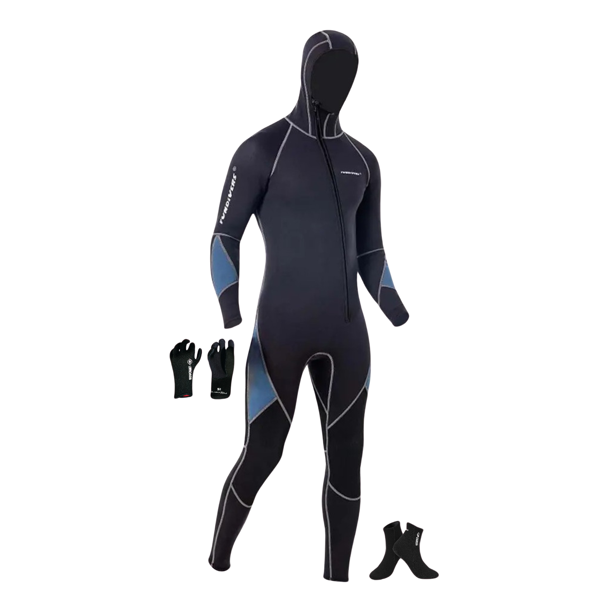
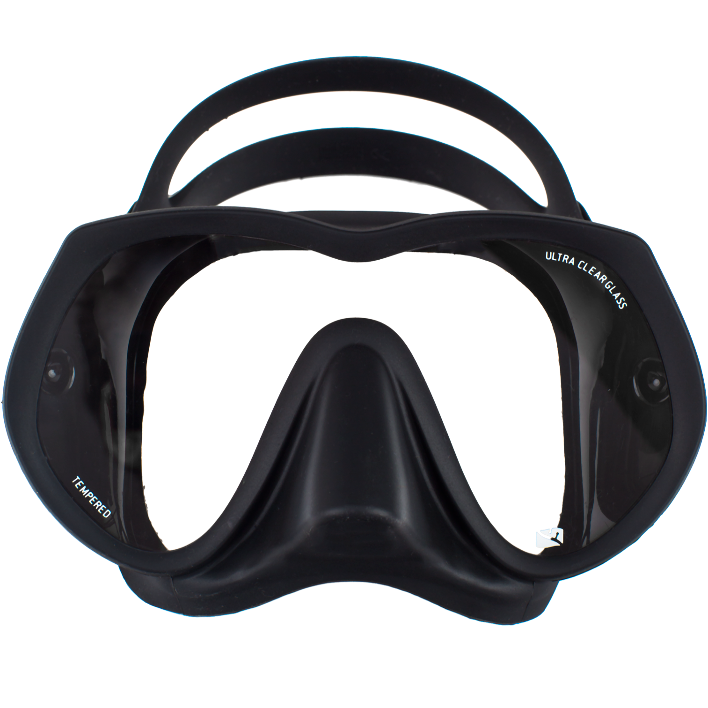
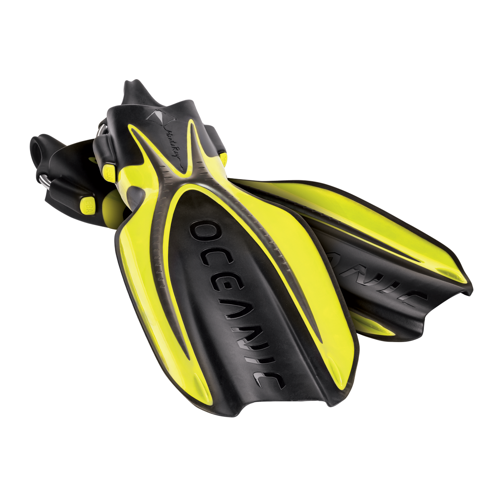
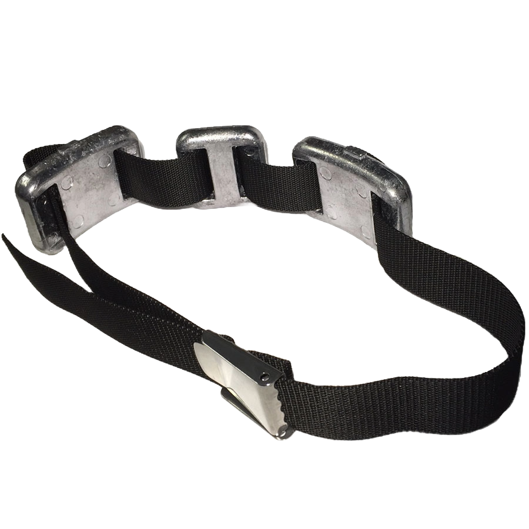
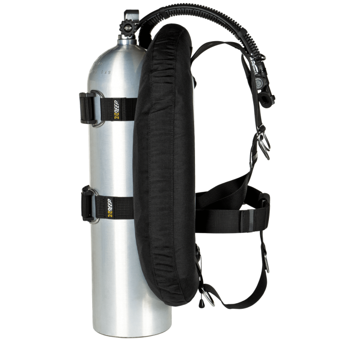

Plonger en milieu naturel nécessite une certaine quantitée de matériel en fonction du type de plongée ainsi que de la profondeur ou même de la durée de la plongée.
Les indispensables :
La combinaison :
C'est elle qui vous maintient au chaud. En effet, l'eau est froide et ne permet pas à un être humain d'y passer des heures sans finir en hypothermie. Plus vous comptez descendre profondément, plus votre combinaison devra être épaisse, car même en plein été, lorsque la surface de la Méditerranée avoisine les 30°C, à 50 mètres sous la surface, la température n'est plus que d'environ 10°C.
Le masque :
Vous pouvez toujours plonger sans, mais vous risquez de ne pas voir grand chose
Les palmes :
Sans palmes, se déplacer dans l'eau n'est pas impossible, mais complique grandement les choses. Se déplacer sans palmes dans l'eau, c'est un peu comme se déplacer sans jambes sur terre.
Le matériel optionel :
La ceinture de plomb :
Cette ceinture plombée s'accroche autour de la taille et permet au plongeur de descendre et rester au fond plus facilement. En effet, le corps humain a plutôt tendance à flotter, c'est pourquoi il est plus confortable de plonger avec une ceinture de plomb.
Les bouteilles :
Elles permettent tout simplement de respirer sous l'eau, mais ne sont malgré tout pas obligatoires. Un apnéiste bien entraîné est capable de descendre à une vingtaine de mètres et d'y rester une grosse dizaine de minutes. Certains, plus rares, sont capables de descendre bien plus profond et de rester bien plus longtemps. Les bouteilles permettent des plongées loisir plus longues et accessibles à tout le monde.